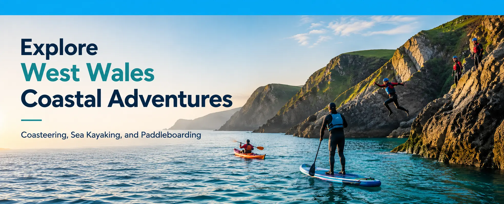
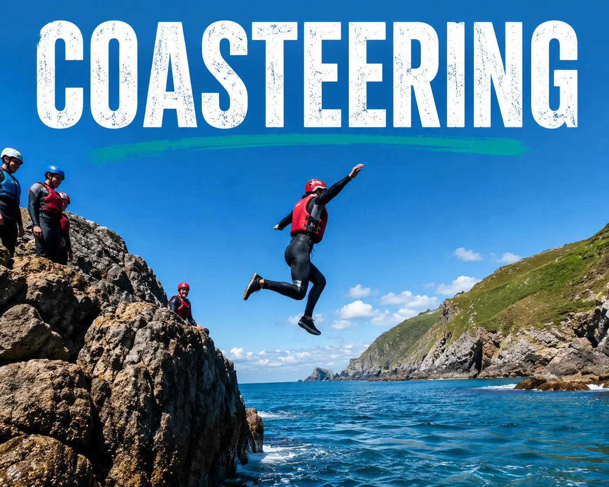
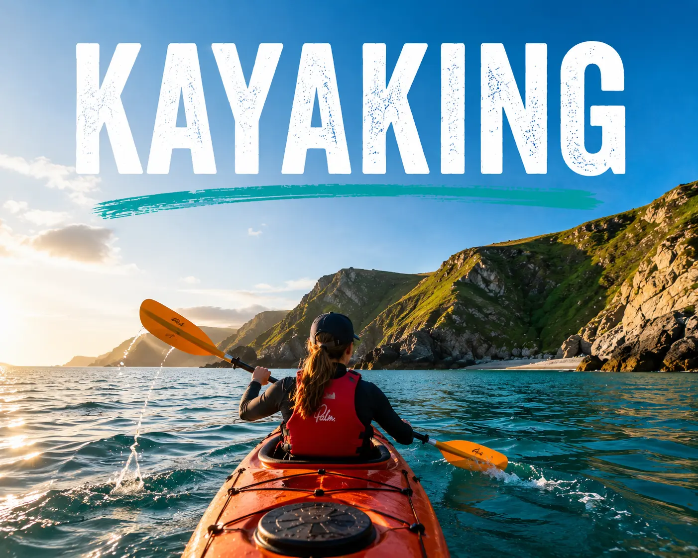
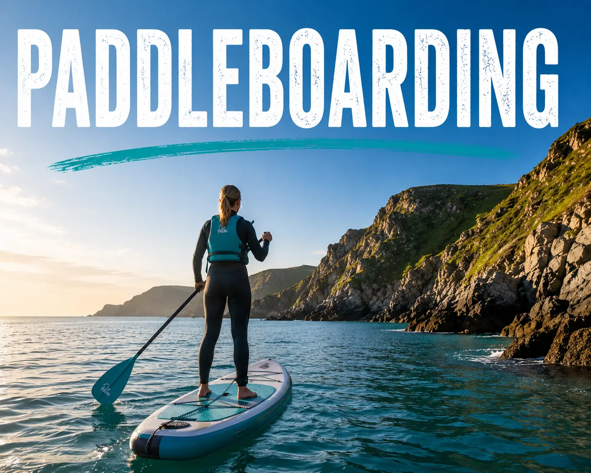

Antur is an outdoor activity company based in the stunning coastline of West Wales, offering unforgettable adventures for all ages and experience levels. From calm sea kayaking journeys to exciting coasteering and paddleboarding experiences, Antur helps people explore the natural beauty of the Welsh coast in a fun, safe and memorable way.



The Welsh coastline is rich in history, culture and natural beauty. For generations, coastal communities in West Wales have relied on the sea for fishing, trade and travel. Today, the coastline remains an important part of Welsh heritage, known for its rugged cliffs, hidden coves and stunning beaches. Exploring the coast through activities such as kayaking, paddleboarding and coasteering allows visitors to experience the landscape and heritage of Wales in a unique and unforgettable way.